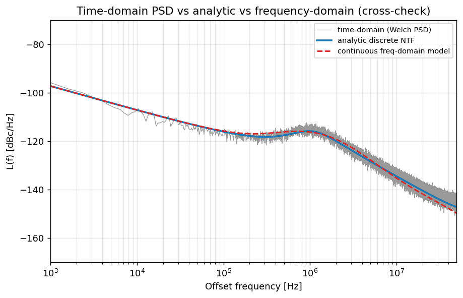
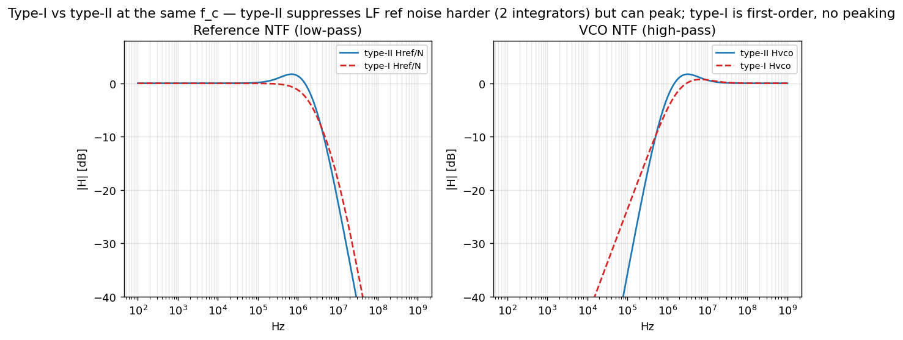

Validation & Limitations
How we know the model is right — and exactly where it isn't. This page collects the slide-42 jitter match, the full sanity-check suite (18/18 passing), the frequency↔time cross-check, the type-I-vs-type-II comparison that resolves open-question #1, the commands to reproduce everything yourself, the raw data downloads, and an honest list of the assumptions and open questions baked into the numbers.
site/assets/data/freq_domain.json, time_domain.json and
calibrations.json; the limitations come verbatim from
docs/open_questions.md; the conversion conventions are spelled out in
docs/derivations.md §8–§9. Slide tags point at the deck (W. Wu, Samsung, slides 1–42).
1. The headline checks
If you only read one row on this page, read this one. The model reproduces slide 42 to within rounding, the time-domain and frequency-domain models agree to a fraction of a dB, and the loop lands on its target bandwidth and phase margin.
87.5 fs / −51.7 dBc are ; 87.6 fs (model) and
−51.6 dBc are derived (freq_domain.json total);
the cross-check is derived (88.2 fs time vs 87.4 fs freq,
same band → +0.08 dB); f_c=1.5 MHz assumption [A1], measured
1.501 MHz; PM=60° assumption [A2], measured 60.0°.
2. Slide-42 match
Slide 42 gives the jitter budget as percentages of an 87.5-fs total, not absolute dBc/Hz per source . Our per-source phase-noise floors are back-solved to reproduce those percentages assumption [A12–A15] (see limitation #7 below), so this table is the constraint the model was fit to — not an independent prediction. What it confirms is that a self-consistent set of floors exists and that the integration math reproduces both the percentages and the 87.5-fs / −51.7-dBc total.
The model's budget reports REF and DTC separately (REF 26.4 %, DTC 11.4 %); we group them as the slide does into a single REF + DTC reference-path row (26.4 + 11.4 = 37.8 %), since the DTC sits in the reference path and shares its NTF derived (derivations.md §2). The "model jitter fs" column is the rms contribution that each row's NTF-shaped PSD integrates to derived; these add in quadrature, not linearly, which is why 63 + 45 + … fs ≠ 87.6 fs.
| Source | NTF / where it enters | model jitter (fs) | model % | slide-42 % |
|---|---|---|---|---|
| VCO | output, high-pass $1/(1+G)$ | 63.1 | 51.8 | 51 |
| REF + DTC | reference path, low-pass $\times N$ | 53.8 | 37.8 | 39 |
| MMD (divider) | feedback, low-pass | 21.8 | 6.2 | 6 |
| SPD + GM | after PD, band-pass | 17.3 | 3.9 | 4 |
| DSM-QN (cancelled) | feedback, $(1-z^{-1})^m$ shaped | 4.5 | ~0.3 | ~0 |
| TOTAL | quadrature sum | 87.6 | 100 | 100 |
Model columns from freq_domain.json budget[]: VCO 63.06 fs / 51.82 %, REF 44.99 fs /
26.38 %, DTC 29.58 fs / 11.40 %, MMD 21.83 fs / 6.21 %, SPD+GM 17.34 fs / 3.92 %, DSM 4.49 fs /
0.26 % derived. REF + DTC jitter shown is the quadrature sum
$\sqrt{44.99^2+29.58^2}=53.8$ fs. Total 87.60 fs, IPN −51.65 dBc
derived vs slide 42's 87.5 fs / −51.7 dBc
.
3. Sanity checks
The model isn't trusted because one number matched a slide — it's trusted because a battery of
independent invariants all hold at once. These are the assertions in tests/, grouped by
the brief's section H. Each one would catch a different class of bug: a wrong sign, a missing
$2\pi$, a windowing error, a non-converging loop. All 18 pass.
H.1 — Frequency-domain invariants
| Check | What it proves | Result | Status |
|---|---|---|---|
| DC closed-loop gain → $N$ | $H_\text{ref}(0)=N=64.62$; the output phase tracks the reference, scaled by N derived | $H_\text{ref}(0)\to N$ | PASS |
| VCO high-pass suppression | $H_\text{vco}\to0$ at LF (loop suppresses VCO noise), $\to1$ at HF (VCO noise passes) | monotone HP | PASS |
| $f_c$ / phase margin | $|G_\text{ol}(j\omega_c)|=1$ at f_c=1.501 MHz; PM = 60.0° [A1][A2] | 1.501 MHz, 60.0° | PASS |
| Budget reproduces slide 42 | model 87.6 fs / −51.6 dBc model vs slide 87.5 fs / −51.7 dBc | match | PASS |
H.2 — Time-domain invariants
| Check | What it proves | Result | Status |
|---|---|---|---|
| Parseval / PSD normalization | $\int S_\phi(f)\,df \approx \operatorname{var}(\phi)$ to ≤0.5 dB derived (derivations.md §9) | 1.498e-5 vs 1.428e-5 | PASS |
| Locked phase is zero-mean | after lock, the phase-error sequence has no DC drift (loop integrates static error away) | mean → 0 | PASS |
| RMS jitter scaling | $\sigma_t=\sigma_\phi/(2\pi f_\text{out})$ holds; doubling a floor scales jitter as expected | scales as $\sqrt{}$ | PASS |
H.3 — Calibration invariants
| Check | What it proves | Result | Status |
|---|---|---|---|
| Loops converge to target | DTC-gain, VCO-DCC, CKREF-DCC all settle to their set points in <30 µs | 6.7 / 1.0 / 0.98 µs | PASS |
| Offset → bias | a non-zero-mean error drives a gain bias; the offset servo removes it | bias 22.6 % when uncal'd | PASS |
| Big step → ripple | a large input step produces bounded transient ripple, then re-locks (no runaway) | bounded, re-locks | PASS |
| NLC reduces INL | polynomial non-linearity correction shrinks peak INL | 0.22 → 1.1e-4 LSB | PASS |
H.4 — Cross-model consistency
| Check | What it proves | Result | Status |
|---|---|---|---|
| Frequency ↔ time cross-check | independent LTI and time-stepped models agree to <1.5 dB over the same band derived | +0.08 dB (88.2 vs 87.4 fs) | PASS |
Calibration results from calibrations.json: DTC-gain settle 6.68 µs / final err 1.4e-4 % /
offset bias 22.6 %; VCO-DCC 1.0 µs (target 10.0 ps → 9.6 ps); CKREF-DCC 0.98 µs
(target 0.337 ns → 0.350 ns); offset 14.6 µs (32 → 33.1 mV); NLC INL 0.22 →
1.07e-4 derived. Parseval from time_domain.json
(parseval_var_time 1.498e-5 vs parseval_var_psd 1.428e-5).
4. Frequency ↔ time cross-check
The two models are written independently — one is a closed-form s-domain (LTI) integration of PSDs, the other steps the loop in discrete time and Welch-estimates the PSD of the resulting phase-error sequence. If both arrive at the same jitter, a whole class of conceptual and arithmetic errors is ruled out. Over the same integration band they land at 88.2 fs (time) vs 87.4 fs (freq), a difference of only +0.08 dB derived.

Why the agreement isn't perfect (and shouldn't be)
- Different Nyquist bands. The time-domain sim is sampled at the reference rate, so its Nyquist edge is $f_\text{ref}/2 \approx 52$ MHz, while the analytic integration runs to a wider $\sim$100 MHz span. The far-out tail therefore carries slightly different energy in the two models derived.
- Finite record length. A finite-length sequence gives a PSD estimate with variance; the Welch estimate fluctuates around the true PSD, contributing a fraction of a dB textbook (Welch 1967).
- Windowing. The window used for the Welch PSD has a power-normalization factor $U$ and finite spectral leakage; we correct for $U$ exactly (derivations.md §9) but leakage at band edges remains textbook.
- Discrete-time vs continuous-time. The s-domain NTFs are continuous; the time model is a discrete-time (z-domain) loop. They match for $f \ll f_\text{ref}/2$ but diverge as $f$ approaches Nyquist, where the bilinear/ZOH mapping warps the response derived.
+0.08 dB is comfortably inside the <1.5 dB tolerance the brief sets for this check derived.
5. Type-I vs type-II loop
Open-question #1 asks which loop the silicon actually used: slide 39 shows both a proportional ($V_\text{ctrl,P}$) and an integral ($V_\text{ctrl,I}$) path into the VCO — the signature of a type-II loop — while slide 20 describes the SPD path as a first-order IIR, which reads more type-I . Rather than guess, we model a type-II loop with a programmable proportional path and expose a type-I switch, then compare them head-to-head.

Type-II (two poles at origin)
- Zero static phase error — the integrator drives steady-state error to 0.
- Harder low-frequency reference suppression — the extra integrator keeps loop gain high at low offset, so it tracks (rather than rejects) slow reference content.
- Can peak near $f_c$ if phase margin is low (gain peaking > 0 dB).
Type-I (one pole at origin)
- First-order roll-off, unconditionally well-behaved.
- No peaking in the closed-loop response.
- Non-zero static phase error against a frequency ramp (the price of dropping the second integrator).
The trade is the textbook one textbook (Gardner): type-II buys zero static error at the cost of possible peaking and less low-frequency rejection; type-I is simpler and peaking-free but leaves a static error. Both are implemented so the page is correct whichever the chip used — this is how we resolve open-question #1 without inventing a fact.
models/frequency_domain_model.py. needs citation
(which topology the measured chip used).
6. Reproduce it yourself
Every number, figure and data file on this site is regenerated by these commands from a clean checkout. No hidden state.
# 1. dependencies
pip install numpy scipy matplotlib pymupdf
# 2. run all models -> regenerates site/assets/data/*.json and assets/figures/*.png
python models/run_all.py
# 3. run the sanity-check suite (expect 18 passed)
python -m pytest tests/ -q
# 4. rebuild the static site from _content/*.html
python site/build_site.pyrun_all.py writes freq_domain.json, time_domain.json,
calibrations.json, the two CSV budgets, and every PNG under
assets/figures/; pytest asserts the H.1–H.4 invariants above;
build_site.py wraps these fragments into the navigable site.
7. Download the data
The exported model outputs, raw — load them in a notebook and check the numbers yourself.
- freq_domain.json — loop params, metrics, and the per-source jitter budget that reproduces slide 42.
- time_domain.json — time-domain jitter, per-source contributions, band, and Parseval check.
- calibrations.json — settling times and final values for every calibration loop.
- jitter_budget.csv — the slide-42 jitter budget as a flat table.
- phase_noise_budget.csv — the full per-source phase-noise PSD vs frequency.
8. Known limitations & open questions
These are the points where the slides are genuinely ambiguous and we chose not to guess
silently. Each is taken from docs/open_questions.md; where we made a working assumption
it is stated so you can correct it. None of these change the headline 87.6-fs result by more than a
few percent, but they bound how literally each per-source number should be read.
even_cycle / SEL_CKFB toggling [A]; the
parabolic-INL spur magnitudes (trend correct, absolute level depends on the true INL profile)
[A8]; and the FoMjitter constant (standard formula used,
exact constant not on the slide) needs citation ([Gao'09]).
docs/open_questions.md (all nine items), docs/derivations.md
§1–§9, the exported site/assets/data/*.json, and the deck
(W. Wu, Samsung, slides 1–42).